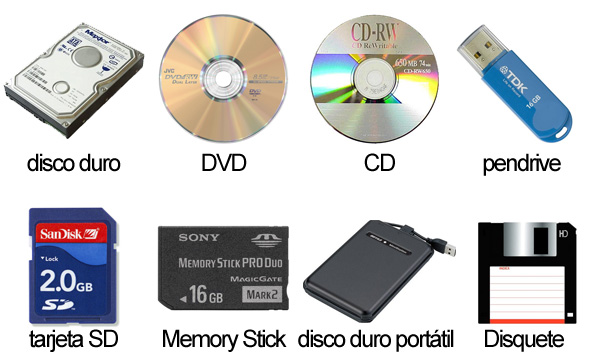

PROGRAMACION DE LAPSO 2021---2022
DISPOSITIVOS DE ALMACENAMIENTO
PROGRAMACION DE LAPSO 2021---2022
DISPOSITIVOS DE ALMACENAMIENTO
Un dispositivo de almacenamiento de datos es un conjunto de componentes electrónicos habilitados para leer o grabar datos en el soporte de almacenamiento de datos de forma temporal o permanente .
Dispositivos de almacenamiento magnético: Discos duros magnéticos, disquetes y cintas magnéticas.
Dispositivos de almacenamiento óptico: CD-Rom, DVD y Blu-Ray.
Dispositivos de almacenamiento electrónico o flash: Discos duros SSD, pen drives y tarjetas de memoria
1.Memoria RAM. Acrónimo de Random Access Memory (Memoria de Acceso Aleatorio), es el campo de almacenamiento empleado como medio de trabajo en los sistemas computacionales, pues contiene todas las instrucciones del procesador y la mayor parte de las instrucciones del software. Al apagar o reiniciar el sistema, se borra la totalidad de su contenido.
2.Memoria ROM. Acrónimo de Read-Only Memory (Memoria de Sólo Lectura), es un medio de almacenamiento que contiene datos difíciles (o imposibles) de modificar, vitales para el funcionamiento básico del sistema computacional y su sistema operativo primario.
3.Unidades de Disco Rígido o “Duro”. Conocidas como HDD (Siglas de Hard Disk Drive), son unidades de mucho mayor almacenamiento que los discos ópticos y memorias, pero que suelen hallarse dentro del CPU y no ser removibles. Por eso suelen contener la información del sistema operativo y el contenido de archivos y software del computador en su totalidad
4.Unidades de Disco Duro portátiles. Versión removible y externa del disco rígido, se conectan al computador a través de sus puertos de E/S y albergar grandes cantidades de información
5.Unidades Zip. Introducidos al mercado a mediados de los 90, las unidades ZIP operan a partir de discos magnéticos de alta capacidad de almacenamiento, a partir de unidades periféricas. Fueron reemplazados por las memorias flash.
6.Unidades de Memoria Flash (pen-drive. Conectados al equipo a través de USB o Firewire, estos lectores permiten el soporte de información en formato portátil compatible con cámaras digitales y agendas electrónicas.
7.Unidades de Blue Ray. Se llama así a un formato de disco óptico de nueva generación, dotado de mucha mayor capacidad de almacenamiento y calidad de lectura, ya que el láser empleado para dicha lectura es de color azul en vez del rojo tradicional. Admite hasta 33,4 Gigabytes por capa de grabación.
8.Almacenamiento en la nube. El desarrollo de los sistemas de almacenaje en línea y de las altas velocidades de transmisión de datos en Internet, han permitido usarlo como un dispositivo de lectura y escritura, por lo que muchos confían sus archivos a “la nube” en lugar de a medios físicos.
9.Unidades de CD-ROM. Siglas de Compact Disc Read-Only Memory (Disco Compacto de Memoria de Sólo Lectura), son dispositivos de lectura únicamente creados en 1985 y que operan en base a un haz de láser que, reflejado en la lámina dentro del disco, suministra al computador un conjunto de señales binarias a partir de las llanuras y hendiduras de éste
10.Unidades de DVD-R. DVDs en blanco se utilizan para realizar copias de seguridad de los archivos informáticos y de almacenamiento de medios de grabación , ya sea en forma de fotos, música o archivos de texto. Hay varios formatos de DVD diferentes entre los que elegir . La más antigua es DVD- R , introducido en 1997 . Otros formatos principales son DVD + R , DVD- RW y DVD + RW y cada uno tiene algo diferente que ofrecer . DVD- R
 1. Memoria RAM. Esta permite al computador realizar los procesos con mucha mas velocidad y a su ves tiene la funcion de hacer que el computador de imagen
2.Memoria ROM Memoria de acceso aleatorio y es la encargada de despertar al teclado ,monitor y el mouse (BIOS) Instalado desde
fabrica
3.Unidades de Disco Rígido o “Duro” Esta es donde se encuentra instalado el sistema operativo y sin el el computador no cerviria y tien la ventaja de almacen
4.Unidades de Disco Duro portátilesEste dispositivo tiene la ventaja de que lo podemos llevar a cualquier parte y poderlo usar en cualquier computador que posea un puerto U.S.B
5.Unidades Zip Este deispositivoa posee alta velocidad de transmicion de datos y son portatiles
6. Unidades de Memoria Flash (pen-driveTienen mucha mas capacidad de almacenamiento que las unidades Unidades Zip y mucha mas velocidad y son portatiles Son resistentes a los rasguños y al polvo
7.Unidades de Blue Ray Las principales ventajas del Blu-Ray estan en su gran capacidad de almacenamiento. Un disco de capa simple de Blu-Ray tiene cinco veces más espacio que un DVD, por otro lado lado, también existe una mejora sustancial en la calidad de almacenamiento, especialmente cuando hablamos de videos de alta definición.
8.Almacenamiento en la nube Costo ,Accesibilidad ,Recuperación ,Velocidad y sincronización , Seguridad ,Enlace a varios servicios de Google y aplicaciones de terceros (opcional) Hasta 15 GB de memoria disponible de forma gratuita
9.Unidades de CD-ROM Una de las ventajas de los CD-ROM son su alta capacidad, Se puede almacenar, gestionar y distribuir gran cantidad de información de naturaleza mixta (texto, sonido, imágenes fijas, video) en muy poco espacio, lo cual implica la recuperación precisa y rápida de esa información,el acceso en línea y poco costosa reproducción..
10.Unidades de DVD-R : Es el formato más compatible y puede ser leído por prácticamente todos los reproductores de DVD. Pueden ser leídos por unidades de DVD en los ordenadores portátiles, DVD y reproductores de DVD. Cuestan un poco menos que el DVD + R, y son significativamente más baratos que los DVD RW
1_.Unidades de Disco Rígido o “Duro” :
Este dispositivo es muy cencible a los golpes ,a las subidas y bajas de tenciones y son costosos dependiendo de su capacidad
2_.Memoria ROM:
Se necesita una memoria ROM específica de acuerdo al dispositivo, se pierde todos los datos de la computadora si se borra la memoria ROM.
3_.Memoria RAM:
Al dañarse el monitor dejara de ricivir señal y debe de colocarsele una de igual frecuencia de lo contrario no mostrara imagen el computador son volatil
4_.Unidades de Memoria Flash
Las desventajas principales de la memoria flash son el precio y las limitaciones de reescritura. Dado que es todavía una tecnología relativamente nueva, el coste por megabyte de
almacenamiento es más que el de un disco duro tradicional. 5_.Unidades de Blue Ray:
Los reproductores para Blu Ray son caros. asi como tambien los Blue Ray Disc en comparacion de los DVD. Si analizamos el costo por GB de un disco Blu-Ray de 25 GB y un DVD de 4 GB, nos damos cuenta que el de Blu-Ray cuesta hasta el doble de caro por cada GB. Su velocidad de grabacion es limitada ronda los 2x y 6x, mientras que el DVD maneja velocidades de entre 8x hasta 48x, lo que ocaciona mayor tiempo en la grabacion de un Blu Ray disc comparado con un DVD.
6_.Almacenamiento en la nube: Dependencia de conexión, Discos duros ,Atención al cliente, Privacidad,Almacenamiento en servidores de Google (sin información concreta sobre su ubicación) Google solo utiliza cifrado de 128 bits para almacenar los archivos
7.Unidades de DVD-R: La principal desventaja de los DVD-R es que sólo se pueden grabar una vez.Cuyo contenido
no puede ser modificado una vez que ya ha sido grabado
8.Unidades de CD-ROM: Son de poca capacidad solo sinven para cosas pequeñas como textos musica y videos y actual mente an sido desplazados por los dvd que poseen mucha mas capacidad de almacenamientos
1_.Capacidad de almacenamiento de datos: :
cuanto mayor sea esa capacidad es mejor.
2_.Velocidad de lectura y escritura de datos: :
esta es la velocidad de transferencia de datos que cuanto más rápida sea es mejor.
3_.Tipo de tecnología del dispositivo: :
Tenemos los dispositivos magnéticos, los ópticos y los electrónicos. Estos últimos son los más nuevos y por supuesto la mejor tecnología.
4_.Composición física :
El peso y tamaño influyen mucho en el traslado o ubicación dentro de un PC. Cuanto menor peso y tamaño tengan mucho mejor.
2_.Resistencia ante golpes y roturas:
Las tecnologías actuales son más resistentes ante golpes y caídas. Esta característica es muy importante para que el dispositivo sobreviva por mucho tiempo.
En Informática, desde siempre los Dispositivos de Almacenamiento de Datos fueron un componente importantísimo para desarrollar tareas cotidianas. Sin ellos, prácticamente no se podría haber evolucionado a todo lo que vivimos hoy en día. Todos los dispositivos informáticos de la actualidad poseen un dispositivo de almacenamiento de datos incorporado. Y cuanto mayor capacidad de almacenamiento y velocidad posean es mejor.
En los dispositivos de almacenamiento del computador, se almacenan en forma temporal o permanentemente los programas y datos que son manejados por las aplicaciones que se ejecutan en estos sistemas.
Debido a la cantidad de información que es manejada actualmente por los usuarios, los dispositivos de almacenamiento se han vuelto casi tan importantes como el computador. Aunque actualmente existen dispositivos para almacenar que superan los 650 MB de memoria; no es suficiente por la falta de capacidad para transportar los documentos y hacer reserva de la información más importante.
Es por tal razón que hoy en día existen diferentes dispositivos de almacenamiento, que tienen su propia tecnología. En la presente investigación se estudiaran todos y cada uno de los dispositivos de almacenamiento de un computador, las distintas marcas, clasificación, entre otros puntos que se irán desarrollando a medida que se avanza en la investigación.
Podemos agrupar los dispositivos de almacenamiento según la tecnología que utilicen para almacenar la información.
DISPOSITIVOS DE ALMACENAMIENTOS MAS UTILIZADOS EN LA ACTUALIDAD
La "R " en el DVD- R significa " grabable ", mientras que los formatos que terminan en RW son " regrabable ". Un DVD- R puede utilizarse para grabar vídeo o audio, pero una vez que se ha escrito que no es posible borrar o sobrescribir . Se utilizan para almacenar archivos que desea conservar , transferir archivos entre ordenadores o el envío de archivos de gran tamaño a los amigos. Un estándar DVD- R con capacidad para 4,7 GB de datos, mientras que una doble capa DVD- R 8,5 GB
VENTAJAS DE LOS DISPOSITIVOS DE ALMACENAMIENTOS
DESVENTAJAS DE LOS DISPOSITIVOS DE ALMACENAMIENTOS
CARACTERISTICAS DE LOS DISPOSITIOVS DE ALMACENAMIENTOS
IMPORTANCIA DE LOS DISPOSITIVOS DE ALMACENAMIENTOS
Las unidades de almacenamiento son dispositivos periféricos del sistema, que actúan como medio de soporte para la grabación de los programas de usuario, y de los datos y ficheros que son manejados por las aplicaciones que se ejecutan en estos sistemas.
Las unidades de almacenamiento masivo de información objeto de esta guía se utilizan en todos los entornos informáticos existentes: entornos centralizados de mainframes, entornos distribuidos cliente-servidor, entornos monopuesto de sobremesa, entornos monopuesto portátiles, etc.
es de mucha importancia las unidades de almacenamiento ya que nos son muy utiles para almacenar cualquier tipo de datos, musica, peliculas, documentos, etc. estos dispositivos son de gran ayuda ya que son muy practicos en todas de sus presentaciones y se encuetran en cualquier lugar...